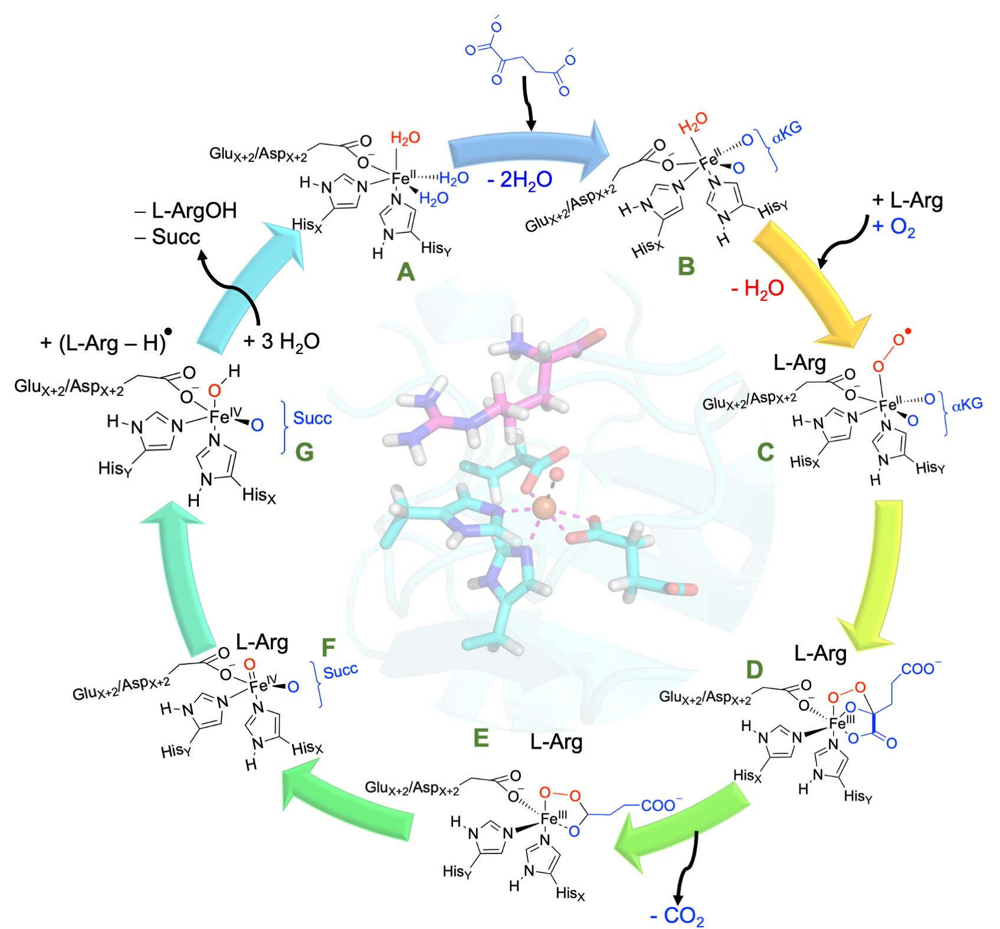

2026
Nature Communications, 2026 (Accepted/in-press)

2025

Binding Assays Enable Discovery of Tet(X) Inhibitors that Combat Tetracycline Destructase Resistance
Chemical Science, 2025, 16, 9691–9704

European Journal of Medicinal Chemistry, 2025, 291, 117584
2024

Chemistry: A European Journal, 2024, e202304172

ACS Catalysis, 2024, 14, 11584–11590

Frontiers in Chemistry, 2024, 12, 1–14
2023
ACS Catalysis, 2023, 13, 10705–10721
Physical Chemistry Chemical Physics, 2023, 25, 27524–27531

Impact of Counteranions on N-heterocyclic Carbene Gold(I)-Catalyzed Cyclization of Propargylic Amide
RSC Advances, 2023, 13, 2896–2902
2022
Chemistry: A European Journal, 2022, 16, e202104167